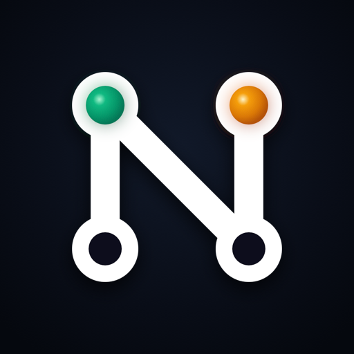
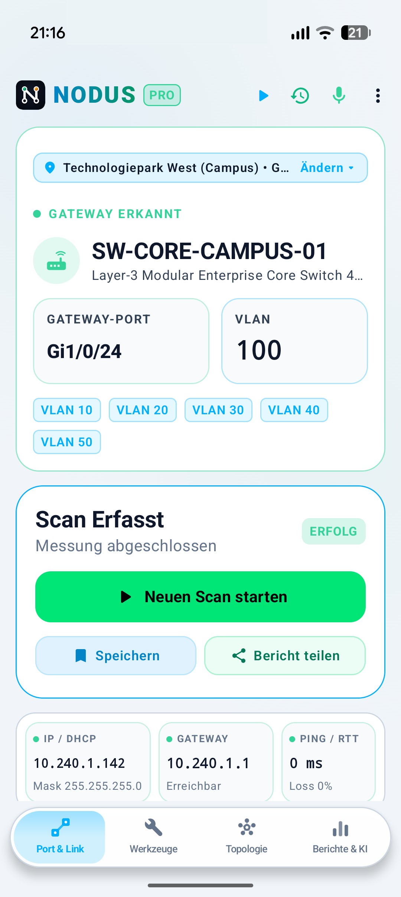

Google PlayNodus
Der Netzwerktester für die Hosentasche. USB-C-Ethernet-Adapter ans Android-Gerät, in die Dose stecken – und Nodus sagt dir, an welchem Switch, an welchem Port und in welchem VLAN du hängst.
A network tester in your pocket. Plug a USB-C Ethernet adapter into your Android device, plug that into the wall — and Nodus tells you which switch, which port and which VLAN you're on.
- Switch, Port-ID, Management-IP und Native VLAN aus LLDP/CDP – Sekunden nach dem Einstecken
- Switch name, port ID, management IP and native VLAN from LLDP/CDP — seconds after link-up
- 802.1Q-VLAN-Sniffer, Multi-Switch-Topologie, iPerf3-Durchsatz, PCAP-Mitschnitt für Wireshark
- 802.1Q VLAN sniffer, multi-switch topology, iPerf3 throughput, PCAP capture for Wireshark
- Regelbasierter Diagnose-Assistent – Messung und Auswertung laufen auf dem Gerät
- Rule-based diagnostic assistant — measurement and analysis run on the device
- Prüfberichte als PDF/HTML für Ticketsystem und Übergabeprotokoll
- Audit reports as PDF/HTML for ticketing systems and handover documentation
